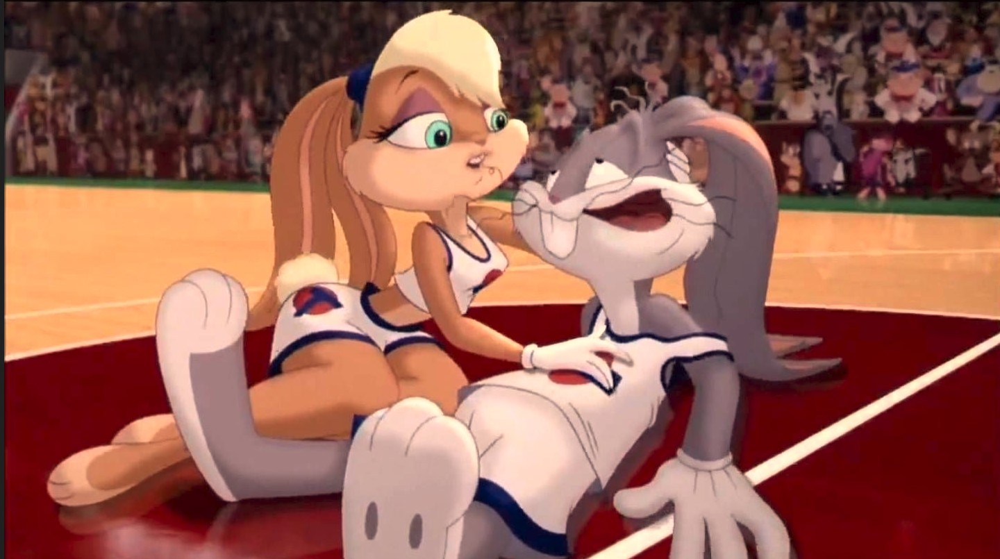

About Lola
Lola Bunny is a Warner Bros. Looney Tunes character. Lola first appeared in the 1996 live-action/animated movie Space Jam and was played by voice actor Kath Soucie. She quickly became a fan favorite. A redesigned, more "looney" Lola appeared in the Cartoon Network series The Looney Tunes Show and was voiced by actor and comedian Kristen Wiig. Lola appeared again in the 2021 film Space Jam: A New Legacy and was voiced by actor and singer Zendaya. In the Space Jam movies, it is hinted that Lola is the love interest of Bugs Bunny. In The Looney Tunes Show, she does, in fact, become Bugs Bunny's girlfriend (though he isn't that into her at first). She could probably do better.

Lola as she appeared in the Space Jam movies
Lola's Facts and Characteristics
- Lola has blue eyes, blonde hair, and a beige coat. She is rarely seen without her ears tied back.
- Lola's design was updated for Space Jam: A New Legacy to make her less sexualized. This caused much controversy among her fans.
- In The Looney Tunes Show Lola has a completely different personality. She is portrayed as being absent-minded and possibly insane, but she is easily the funniest character on the show.
- As of November 2022, Space Jam, Space Jam: A New Legacy, andThe Looney Tunes Show are all available to stream on HBO Max.
Lola meets Bugs Bunny after owning him on the basketball court
Links to Lola on HBO Max
Lola and Bugs in Space Jam

Lola and Bugs on The Looney Tunes Show